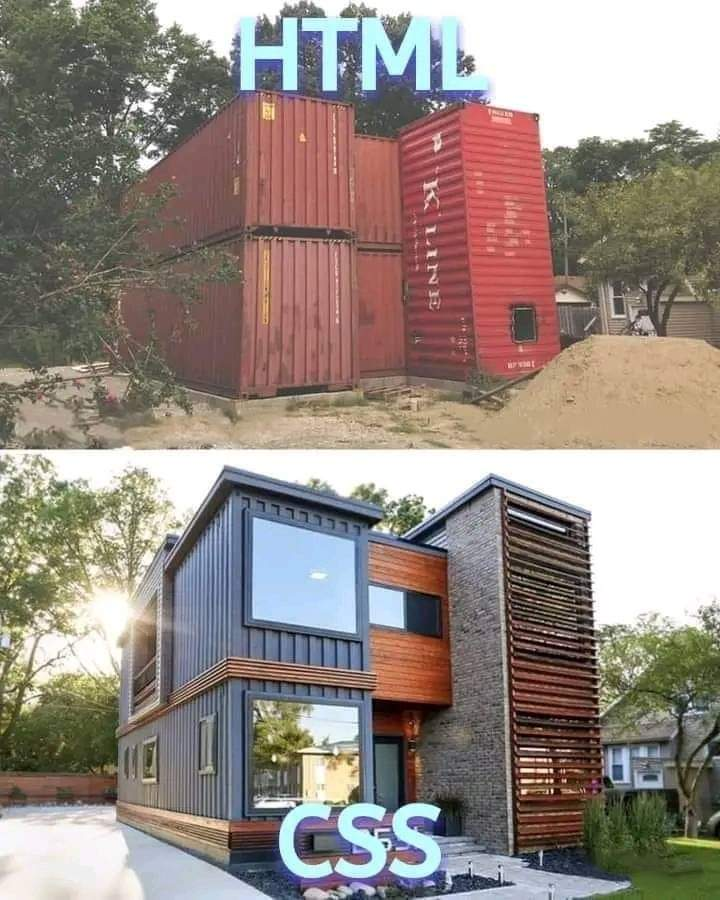

Introducción a CSS en HTML
En el diseño web, podemos establecer dos estructuras principales como las que van a definir nuestra web:
- La estructura: definir cómo es nuestra página web en cuanto a elementos que lo forman.
Ejemplo:table, img, form, p, div, ul/ol, etc.
- La apariencia de cómo va a ser nuestra página web: colores, tipografías, alineaciones, etc.
En las primeras páginas web que se creaban, se establecía en un mismo documento la estructura con la apariencia.
Antes, se mezclaba tanto la información (contenido) como la forma de represanterse (el diseño o formato) de una web.
Actualmente, esto ha cambiado, y se tiene por un lado la estructura y por el otro la apariencia.
La apariencia en las páginas web, se establece con un lenguaje que se llama CSS (Cascading Style Sheets), lo que
conocemos comúnmente como HOJAS DE ESTILO EN CASCADA.
En base a esto, podríamos definir HTML y CSS como lo siguiente:
- HTML: Define el contenido de nuestra página web: ¿Qué hay?(texto, imágenes, tablas, video, audio, formularios, etc)
- CSS: Definir la presentación de nuestra página web: ¿Cómo es? (color de fondo, tamaño, tipografía, disposición, etc)

Funcionamiento y características básicas de CSS
- Las hojas de estilo CSS, son complementos a las etiquetas HTML. Lo que hacen es mejorar la presentación y aspecto de estas.
- CSS se utiliza con el fin de separar el contenido (HTML) de la presentación/apariencia de las web. Esto se hace, para tener
un código mucho más limpio y claro a la hora de poderlo modificar, añadir, etc. elementos a nuestros proyectos.
- CSS intenta evitar la excesiva utilización de tablas en las páginas web. Es decir, a la hora de maquetar webs, se intenta
utilizar etiquetas semánticas de HTML en lugar de usar tablas que permiten menos dinamismo y flexibilidad. Esto permite
que las webs se puedan adaptar de una manera mucho más flexible a los distintos dispositivos multimedia.
- No se indica en el código HTML el estilo del documento sino que se indica lo que es cada elemento y dicho formato se especifica
mediante CSS
- Todas estas especificaciones ya se aplicaban desde HTML4
Ventajas de CSS
- CSS presenta un mayor control de la presentación del sitio web
- Si necesitamos hacer modificaciones de la presentación, los hacemos en un solo lugar y no tnemos que editar
todos los documentos HTML por separado. Es decir, podemos usar un único CSS para todos los HTML de nuestro proyecto.
- Mayor legibilidad. Permite interpretar y entender mejor y más fácil nuestra estructura y diseño a la hora de crearla
- Una reducción de duplicidad de estilos diferentes en un mismo documento.
- Es más fácil crear versiones diferentes de presentación para otros tipos de dispositivos: móviles, tablets, PCs, etc.
Desventajas de CSS
- Dependiendo del navegador que utilicemos, la página que ha sido maquetada se verá de una manera u otra
- El uso de las tablas nos permitía crear diseños complejos de forma mucho más sencilla que utilizando CSS
Tipos de CSS que podemos usar en HTML
Los tipos de CSS que podemos usar en HTML, son los siguientes:
- CSS Externo: Un CSS externo, es un archivo con extensión .css. Se vincula al HTML a través de HEAD, mediante una etiqueta
que se llama link. Su estructura es la siguiente:
link rel = "stylesheet" type ="text/css" href="style.css"
Es el tipo de CSS más utilizado porque separa de una manera clara la estructura (HTML) de la apariencia (CSS)
- CSS Interno: Es un CSS que se establece en el HEAD pero a través de las etiquetas de apertura y cierr style
- CSS Embebido / Incrustrado: Es un CSS que se aplica directamente en la etiqueta (tag) de HTML, a través del atributo Style